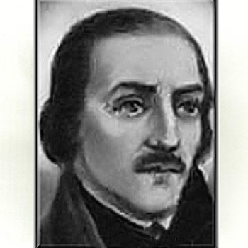

Isusovački blaženici
Svećenik
Bl. Toma Woodhouse
1535. – 1573.
Engleski svećenik dvanaest je godina proveo u zatvoru, služeći drugim zatočenicima. U Družbu Isusovu primljen je tijekom zatočeništva, prije pogubljenja u Tyburnu.
Tekst je preveden i prilagođen uz pomoć umjetne inteligencije.

Izvor slike
- Spomendan
- 1. prosinca
- Zaštitništvo
- Nije navedeno u izvoru
- Životni vijek
- 1535. – 1573.
- Djelovanje
- Obrazovanje i poučavanje vjere · Progoni i progonstvo · Mučeništvo
- Razdoblje
- 16. stoljeće
- Mjesto zatočeništva
- Fleet, London
- Primanje u Družbu Isusovu
- 1572.
- Rođenje — dostupni podaci
- 1535.; dan i mjesec nisu potvrđeni u provjerenom izvoru.
- Mjesto rođenja
- Engleska
- Datum smrti
- 29.06.1573.
- Mjesto smrti/mučeništva
- Tyburn, London, Engleska
- Okolnosti smrti/mučeništva
- Pogubljen vješanjem i sakaćenjem zbog katoličkoga svećeništva i djelovanja za progona.
- Uloga
- Svećenik
- Mučenik
- Da
- Ostale oznake
- Mučenik engleskih protukatoličkih progona
- Pripadnost
- Isusovac
- Razlike u izvorima
- Datum smrti u podatcima zbirke: 29.06.1573. Raniji biografski izvor navodi 19.06.1573. Razlika izvora nije razriješena.
- Drugi oblici imena
- Thomas Woodhouse · Thomas
Životopis
Toma Woodhouse rođen je oko 1535. Za svećenika je vjerojatno zaređen potkraj vladavine Marije Tudor. Kada je Elizabeta I. uvela promjene u crkvenom ustroju, napustio je župnu službu u Lincolnshireu. Godine 1560. otišao je u Wales kao kućni učitelj, ali je i tu službu ostavio. Ustrajao je u slavljenju katoličke mise; tijekom mise uhićen je 14. svibnja 1561.
U londonskom zatvoru Fleet proveo je dvanaest godina. Čuvari su mu u početku dopuštali razmjerno veliku slobodu unutar zatvora. Potajno je slavio misu, molio časoslov i pomagao drugim zatočenicima. Katolički je nauk prenosio i pisanim listićima, koje je vezivao uz kamenčiće i bacao na ulicu. Svoje uvjerenje nije zadržavao samo za zatvorsku zajednicu.
U studenome 1572. poslao je Williamu Cecilu, lordu Burghleyju, pismo kojim ga je poticao na pomirenje s Papom. Prema starijem životopisu pismo je iznijela žena koja je prala zatvorsko rublje. Nakon toga uvjeti zatočenja postali su stroži. Iste je godine zamolio isusovačkoga provincijala u Parizu da ga primi u Družbu Isusovu; prihvaćen je još kao zatvorenik.
Osuđen je na smrt i pogubljen u Tyburnu 19. lipnja 1573. Njegovo primanje u Družbu dogodilo se pred kraj dugoga zatočenja. Časti se kao prvi isusovački mučenik u Engleskoj.
Tekst je preveden i prilagođen uz pomoć umjetne inteligencije.
Pročitaj više na izvornoj stranici ↗